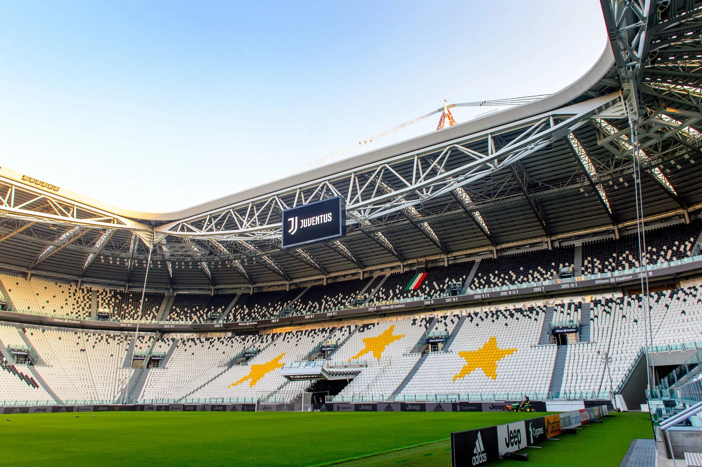
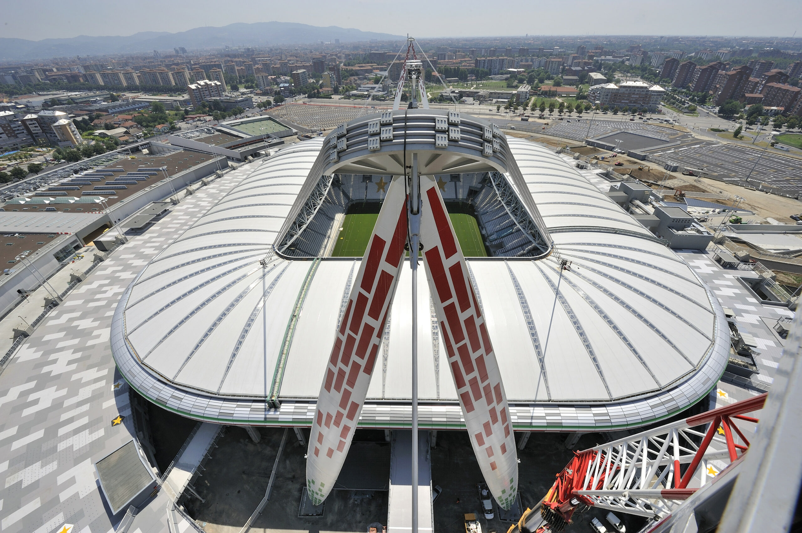
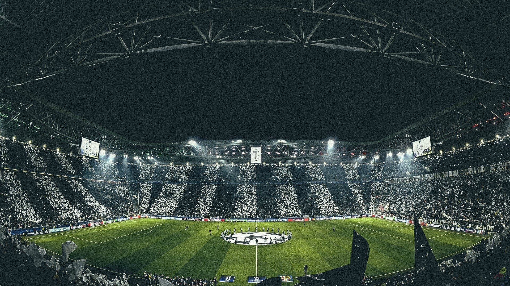

Scopri la presentazione, la storia e l’atmosfera unica dell’Allianz Stadium, casa della Juventus Football Club.
L’Allianz Stadium, situato a Torino, è lo stadio moderno della Juventus Football Club. Inaugurato l’8 settembre 2011, è il primo stadio di proprietà di un club in Italia. Soprannominato spesso “La Casa della Juventus”, è rinomato per la sua atmosfera intensa e la vicinanza tra tifosi e campo, simbolo della passione bianconera.

All’origine, l’Allianz Stadium è stato costruito sul sito del vecchio Stadio delle Alpi, demolito per lasciare spazio a un impianto più moderno e funzionale. Il progetto, fortemente voluto dalla Juventus Football Club, rappresenta una svolta storica per il club, che diventa proprietario del proprio stadio. Inaugurato nel 2011, l’impianto è stato progettato per offrire una visibilità ottimale e un’esperienza immersiva, con una capienza di circa 41.000 spettatori e strutture all’avanguardia.

L’Allianz Stadium è celebre per la sua atmosfera unica, resa possibile dalla vicinanza tra le tribune e il campo. I tifosi della Juventus Football Club creano un ambiente intenso e coinvolgente, trasformando ogni partita in un’esperienza speciale. Grazie alla sua architettura moderna, lo stadio amplifica i cori e l’energia del pubblico, rendendolo uno dei più impressionanti d’Italia.
